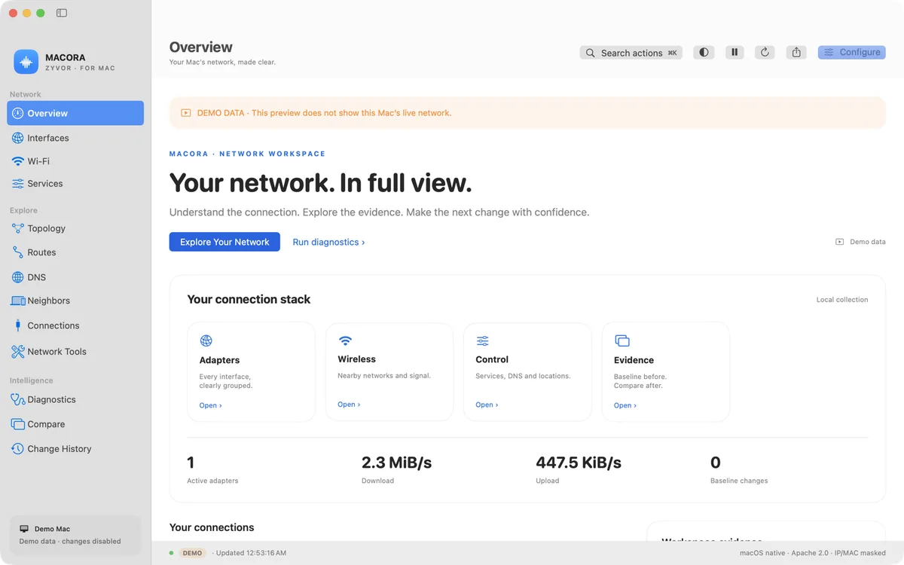
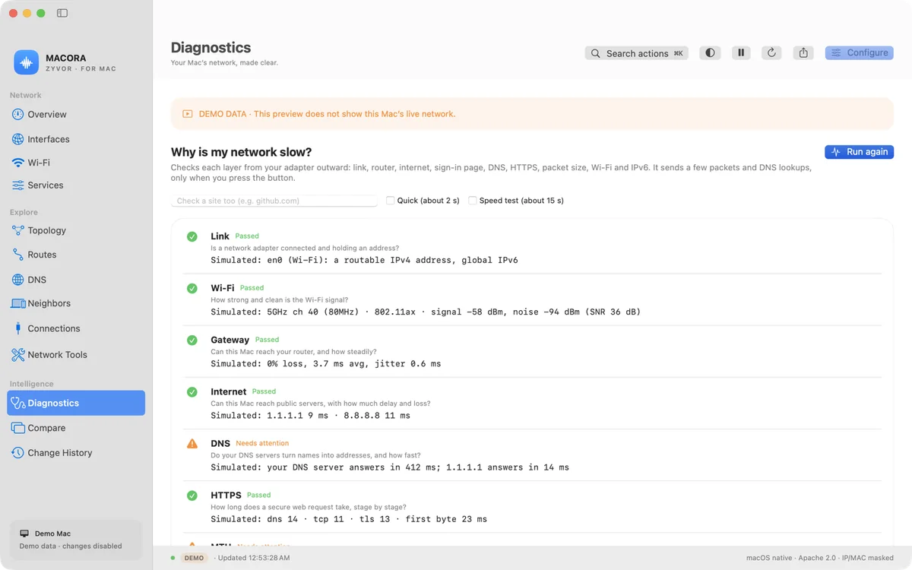
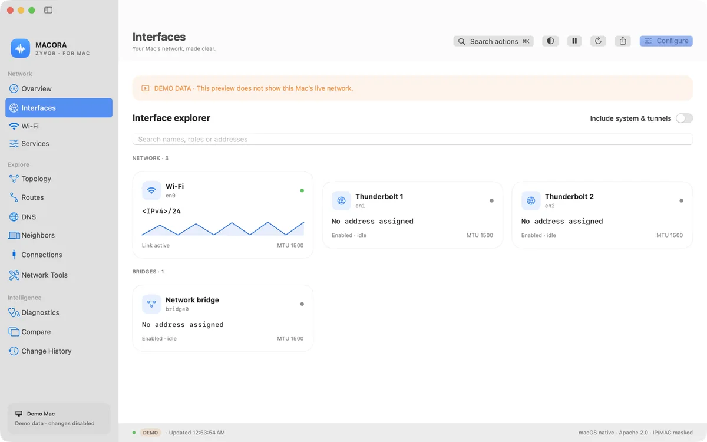
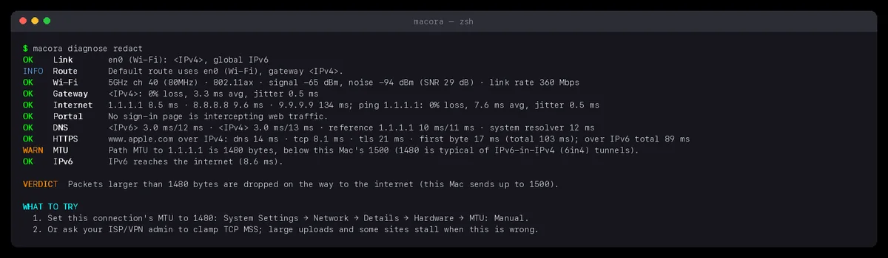
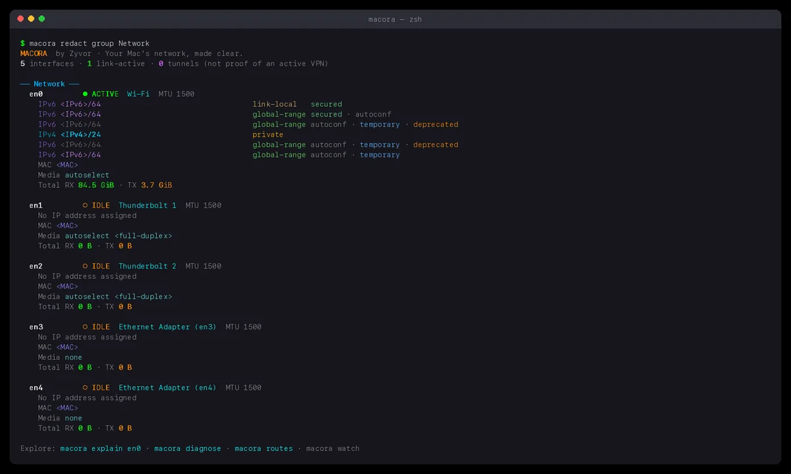

Zyvor · network diagnosis
Macora
Your Mac's network, made clear.
A native app, a CLI and a terminal workspace. Macora explains what your network is doing and why it feels slow: interfaces grouped and annotated, a one-click diagnosis from link to HTTPS, live traffic, scoped DNS and routes. Read-only by default. Source-available under the Zyvor Production License v1.0.
Download Macora 0.5.0Learn more
macOS 14 or later · Apple silicon · notarized · Commercial license required (Zyvor Production License v1.0)

Why is my network slow? Ask it.
Macora walks your connection layer by layer, names the lowest layer that is really wrong and tells you what to try. It reads. It changes nothing without a preview and your say-so.
Features
Diagnosis
The lowest layer that is really wrong.
Link, router, internet, sign-in page, DNS, HTTPS, path MTU, Wi-Fi and IPv6, checked bottom-up. It sends a few packets and DNS lookups only when you press the button.
How diagnose works
Interfaces
Interfaces, grouped and explained.
Network, Bridges, Tunnels, System and Loopback, with each flag, scoped IPv6 address and bridge member explained in plain words, plus live traffic. A counter that is missing stays unavailable rather than being invented.

Command line
The same diagnosis, in your terminal.
macora diagnose prints the same walk with a verdict and what to try. Add quick for about two seconds, to github.com for one site, or redact md for a shareable report.
CLI cookbook
Share safely
Redact before you share.
Redaction masks IP and MAC addresses in exports. Reports come as Markdown, HTML or JSON, and snapshots are private and never overwritten.

More than a diagnosis.
Baselines and diff
Capture a baseline, then compare field by field in the app or with macora diff.
Scripts and dashboards
watch prometheus, NDJSON frames, json on every command and shell completions.
Terminal workspace
macora tui is a full-screen workspace; macora interactive is a persistent command session.
Menu bar and Shortcuts
A menu bar panel with live rates and a Why slow? shortcut, plus Shortcuts actions for network status and the diagnosis.
Safe to run on a machine you care about.
Read-only by default
Nothing changes without a preview and an explicit apply or authorization dialog.
Local-first
No telemetry. Snapshots stay on your Mac, with private file permissions.
Zero dependencies
No external Rust crates and no external Swift packages. Apple system frameworks only.
Pricing.
- Macora
- ₹2,999per Mac per year (incl. 18% GST in India; about US$30 excl. tax outside India).
- Teams
- ₹2,549per unit, 5 or more, by invoice.
- Trial
- 30 daysFree evaluation. Production use needs a licence.
Orders of US$5,000 or more are invoiced in US dollars and paid through Skydo. Prices are set on zyvor.dev.
Specs and requirements.
- Requires
- macOS 14 or laterThe downloadable app is built for Apple silicon. Intel Macs are not verified.
- Build
- Signed and notarizedThe 0.5.0 DMG and pkg are Developer ID signed and notarized by Apple. The CLI tarball is not notarized.
- Version
- 0.5.0Release assets carry a .sha256 file.
- Licence
- Zyvor Production License v1.0Rust CLI and Swift app. A commercial license is required to run it.
- Mode
- Read-only by defaultConfiguration changes need a preview and authorization.
- Install
- DMG, pkg or Homebrewbrew install --cask zyvorai/tap/macora
Honest limits
Not yet run: Intel Macs, administrator-authorized configuration changes, Wi-Fi join and disconnect, and the Location-permission flows. There is no automatic rollback of a configuration change. Per-process bandwidth is not planned for the sandbox-free app. Custom VPN providers, enterprise certificate workflows, firewall engines and Internet Sharing stay in System Settings.
Get started in three steps.
Download
Get
Macora-0.5.0.dmgfrom the release page, or runbrew install --cask zyvorai/tap/macora.Install
Open the DMG and drag Macora to Applications. It requires macOS 14 or later on Apple silicon.
Ask the question
Open Diagnostics and press Run, or run
macora diagnosein a terminal.
Macora 0.5.0 for Mac · SHA-256
205a7cca51ec9de4ad3278becec4928d9a75482c0562c1e44c35c24828762c9aVerify: echo "205a7cca51ec9de4ad3278becec4928d9a75482c0562c1e44c35c24828762c9a Macora-0.5.0.dmg" | shasum -a 256 -c
Licensing and support.
A commercial license is required under the Zyvor Production License v1.0 (sales@zyvor.dev). Separately, if it helps you, you can donate any amount you like, from INR 1 up. Suggested: INR 999 (about US$10), INR 2,999 (about US$30) or INR 9,999 (about US$100), by UPI, card or netbanking. Razorpay accepts international cards.
A donation is voluntary and supports development and maintenance. It is not a purchase: it buys no support, SLA, features, priority or license. Support contracts are separate: sales@zyvor.dev.
Questions, answered.
Do I need a license?
A commercial license is required under the Zyvor Production License v1.0 (sales@zyvor.dev). A voluntary donation is separate and buys no licence, features or support.
Does it change my network settings?
Not by itself. It is read-only by default. A change needs a preview of the exact command and consequence, then an explicit apply or the macOS authorization dialog. There is no automatic rollback.
Will macOS warn me when I open it?
No for the DMG and pkg: they are Developer ID signed and notarized by Apple. The CLI tarball is not notarized. Each download has a .sha256 file.
Which Macs and macOS versions?
macOS 14 or later. The downloadable app is built for Apple silicon; Intel Macs are not verified.
What does the diagnosis send?
Only when you run it, a few packets and DNS lookups to check each layer. Macora has no telemetry.
Are the screenshots a real network?
The app screenshots run Macora's built-in simulated demo data and are labelled Demo data. The terminal screenshots are real output with addresses masked.